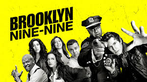

Por que todos deveriam assistir Brooklyn Nine-Nine

Personagens:
Jake Peralta
Amy Santiago
: Uma tag genérica usada para agrupar
elementos e estruturar o layout de uma página. Muito útil para organizar o
conteúdo.
Abas (Tabs): São usadas para organizar conteúdo em
diferentes seções, permitindo ao usuário navegar entre elas sem carregar uma
nova página. Elas geralmente envolvem botões, links e algum JavaScript para
alternar o conteúdo visível.
background-color é usado para definir a cor de
fundo de um elemento HTML.
font-size: Define o tamanho da fonte.
text-align: Controla o alinhamento do texto
(esquerda, direita, centralizado ou justificado).
color: Define a cor do texto.
text-transform: Controla a transformação das
letras (maiúsculas, minúsculas, capitalização).